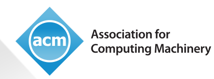
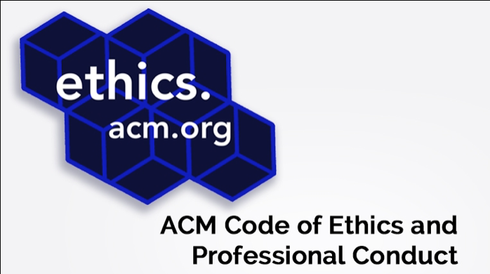

|  | Advancing Computing as a Science & Profession |
||||||||
|---|---|---|---|---|---|---|---|---|---|
| About ACM | Membership | Publications | Special Interest Groups | Conferences | Chapters | Awards | Education | Public Policy | Governance |
Association for computing machinery
Advancing Computing as a Science & Profession
We see a world where computing helps solve tomorrow’s problems – where we use our knowledge and skills to advance the profession and make a positive
impact.
|  |
ACM Updates Code of Ethics ACM has updated its Code of Ethics and Professional Conduct. The revised Code of Ethics addressesthe significant advances in computing technology since the 1992 version, as well as the growing pervasiveness of computing in all aspects of society. ACM’s Code of Ethics is considered the standard for the computing profession, and has been adopted by computing professionals, organizations and technology companies around the world. The Code is a collection of principles and guidelines designed to help computing professionals make ethically responsible decisions in professional practice. |
|---|
| Meet Jim Hendler | KDD 2018, August 19 to 23, London, UK |
SIGCOMM 2018, August 20 to 25, Budapest, Hungary |
|---|---|---|
| James A. “Jim” Hendler is the Director of the Institute for Data Exploration and Applications and the Tetherless World Professor of Computer, Web and Cognitive Sciences at Rensselaer Polytechnic Institute. He also serves as the Director of the joint Rensselaer-IBM HEALS project. He is an ACM Fellow and Chair of ACM’s US Technology Policy Committee. “I look forward to helping to make ACM a trusted, 'must-consult' organization for policy makers.” Image of Jim Hendler |
KDD 2018, August 19 to 23, London, UK |
SIGCOMM 2018, August 20 to 25, Budapest, Hungary |
ACM Expresses Concern About New Executive Order Suspending Visas
The Association for Computing Machinery, a global scientific and educational organization representing the computing community, expresses concern over